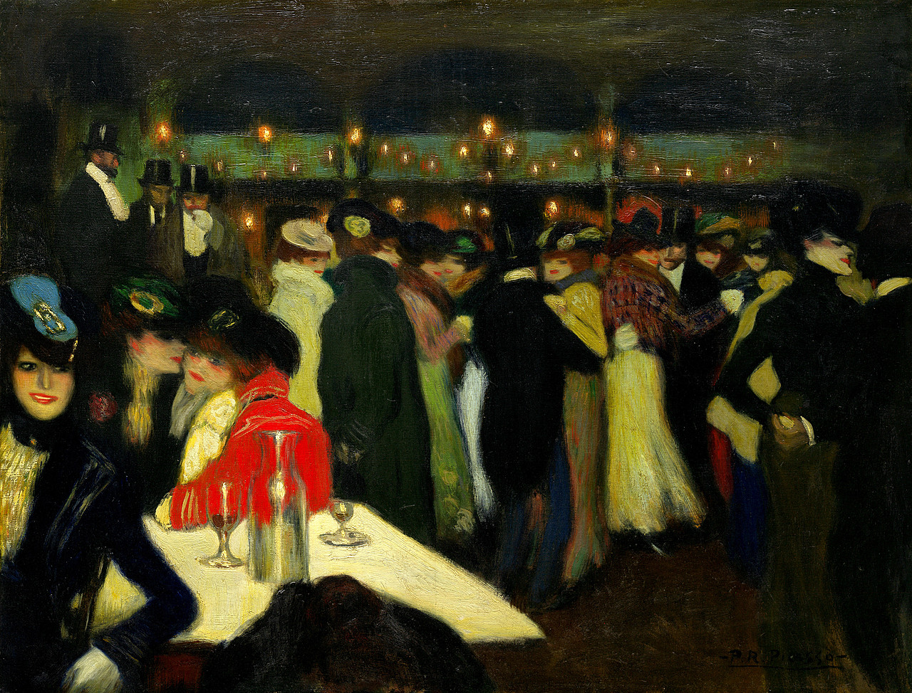
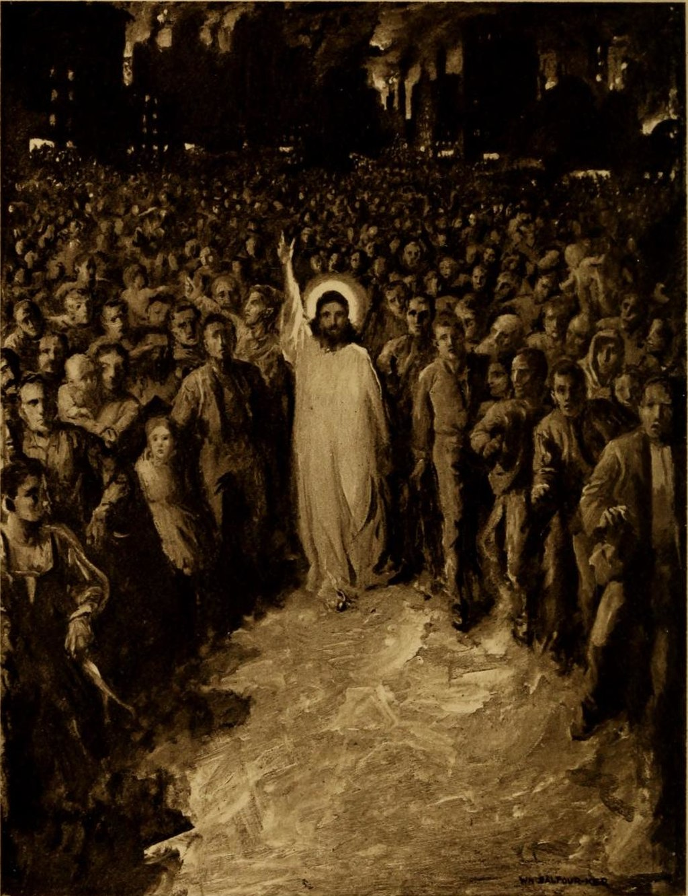
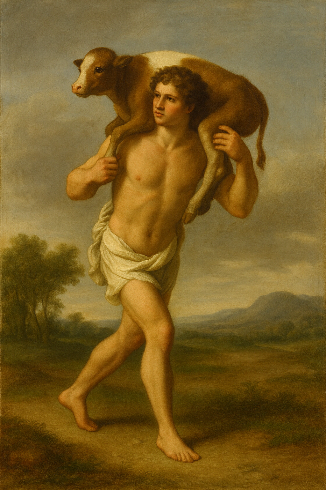
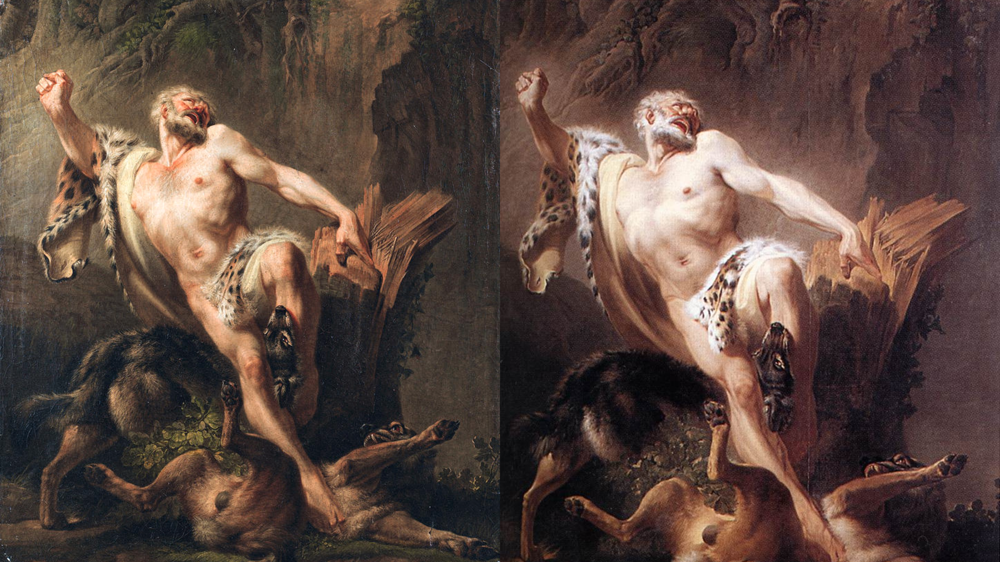
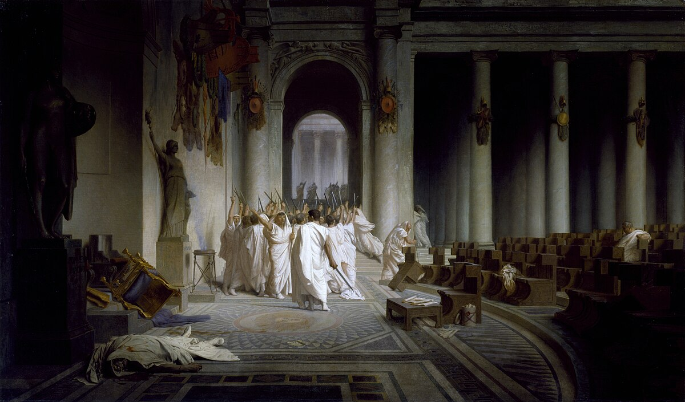
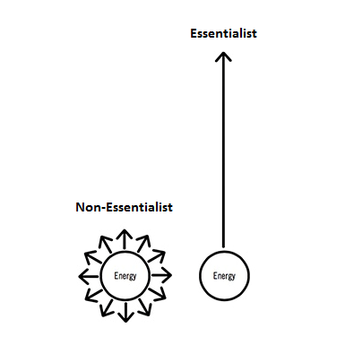
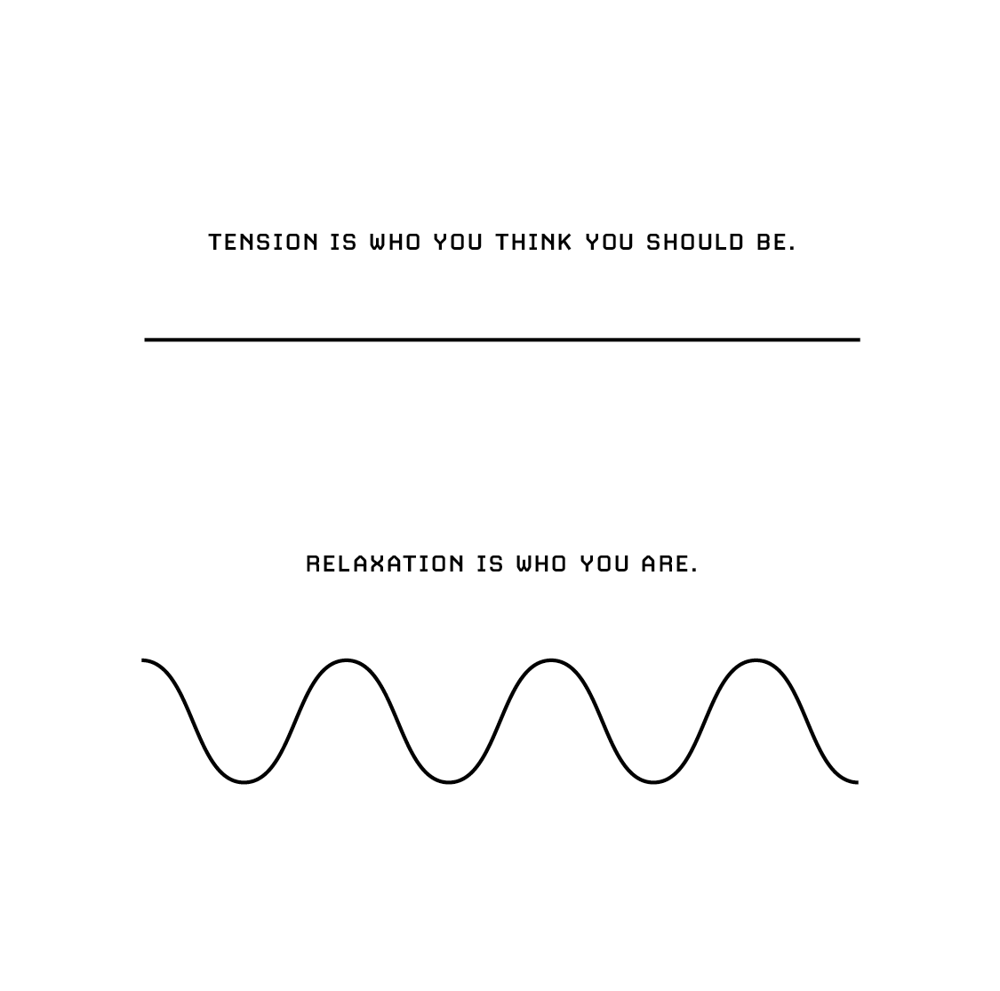
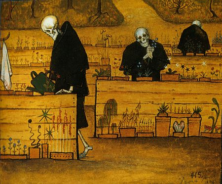

Emotional Resonance Regulation
“When your silence is taken for ignorance and you don’t react, then believe me, you have made a real start on the philosophical enterprise.”
~ Epictetus
Many of us fall into the trap of thinking like preachers, prosecutors, or politicians. As Adam Grant explains:
- In preacher mode, we defend our beliefs as unquestionably right
- In prosecutor mode, we focus on proving others wrong
- In politician mode, we seek approval rather than truth.
These mindsets block us from rethinking our views—preachers and prosecutors dig in, convinced of their own certainty, while politicians may adjust their words to please others but rarely challenge their own assumptions. Real growth requires stepping out of these roles and embracing curiosity, doubt, and the willingness to change our minds. Avoid entering a cerebral cul-de-sac or folie circulaire. People go through all sorts of mental masturbation and acrobatics to contort their thoughts that spiral into justifications and overanalysis, trapping them in loops of complexity mistaken for progress.
Equip yourself with philosophical accouterments. Develop fortitude, endurance, and resilience. Keep in mind that what injures you is not people who are rude or aggressive but your opinion that they are injuring you. Control yourself and your judgment in perceiving the provocation. The acts are in and of themselves—the assessments are not. No one else, in fact, will harm you without your consent; you will be harmed only when you think you are being harmed.
Nobody has a natural affinity to be good or bad. These are simply descriptors. Everybody satisfies a role, e.g., father, brother, boss, tax collector. You are at fault to apply adjectives or confine to opinions of adjectives. When someone speaks poorly of you, consider this response from Epictetus: Clearly, he didn’t know all my other flaws—otherwise, he would’ve listed those too. Insults have no real power unless you let them. As Epictetus also said: Try insulting a stone—what effect does it have? If you remain steady like that stone, the insult loses its force. And if someone wrongs you, may it serve your growth instead.
When experiencing defamation in the forms of slander or libel, let it lie with the scurrilous and flippant wrongdoer. Being wronged means nothing, unless you choose to dwell on it. Expect more from yourself and less from other people. If you hurt other people because they have expectations of you, that’s their problem. If they have an agreement with you, it’s your problem. But, if they have an expectation of you, that’s completely their problem. It has nothing to do with you. They’re going to have lots of expectations out of life. The sooner you can deflate their expectations, the better. Don’t spend your time making other people happy. Other people being happy is their problem. It’s not your problem. If you are happy, it makes other people happy. If you’re happy, other people will ask you how you became happy and they might learn from it, but you are not responsible for making other people happy. When you point a finger at others, three fingers physically point back at you. Consider those who perform bad things as mistaken and therefore to be pitied and helped, if possible, not condemned as evil. It’s no great feat to destroy a person, but truly remarkable to change the way they think. Never look down on someone unless you are helping them up: rehabilitation over fustigation. Loving our enemy is impossible—because once we truly love them, they cease to be our enemy. Here’s an excerpt from a letter that Thich Nhat Hanh wrote to Rev. Dr. Martin Luther King, Jr., June 1, 1965:
“I believe with all my heart that the monks who burned themselves did not aim at the death of the oppressors but only at a change in their policy. Their enemies are not man. They are intolerance, fanaticism, dictatorship, cupidity, hatred, and discrimination which lie within the heart of man. I also believe with all my being that the struggle for equality and freedom you lead in Birmingham, Alabama, is not really aimed at the whites but only at intolerance, hatred, and discrimination. These are real enemies of man—not man himself. In our unfortunate fatherland we are trying to plead desperately: do not kill man, even in man’s name. Please kill the real enemies of man which are present everywhere, in our very hearts and minds.”
Hatred is a poison that harms only the one who feels it, not the target. Let go of grudges as if releasing a toxic venom. Those who hate often do so out of self-loathing—they cheer for others to fail because they lack the courage to take risks themselves. To shield their egos, they convince themselves that failure is inevitable for them, preventing them from making clear, confident choices. Equip yourself with endurance because life is abundant with inevitable struggle. Value is in the struggle of the journey.
Bring awareness to the latent content of music: playing music might remedy no more, so let silence enter. Just as photographs develop in darkness and certain plants thrive in the shade, periods of hardship can foster deep growth and spiritual refinement. There’s something special about divorcing mind and body function temporarily deliberately sitting there and just thinking. People who dance are often seen as crazy by those who cannot hear the music. I want to illustrate here that music could only provide so much comfort to you. I think a temporary leave from music may be good to get you closer to yourself. Sustained monotony is not the greatest company, yet it allows a steady rhythm with which to adjust yourself. We revel in the familiarity of toxicity over the unfamiliarity of loneliness or the unknown. Listening to the same ‘bag’ playlist will predictably leave you ‘sad in your bag.’ What do you expect? You’re used to that playlist—it’s a habit to listen to it. Okay, recognize that. Get a new playlist which promotes happiness. Wallowing in sadness builds a feedback loop which you must break out of. Persist in these behaviors if you want, who am I to suggest how you are to behave. The bottom line: I implore you to be happy, but in doing so, you must recognize what makes you unhappy.
Statues are guides. Be a guide, not a guru. Imitate, then innovate. Consider the Stoic journey as a man swimming. When we have forgotten a number of things and are mistaken, we begin drowning. We could be but a millimeter or meter submerged underwater depending on the circumstances. Nonetheless, once we have found ourselves again, we are only then able to emerge above the water.

Édouard Manet, Boating, 1874. Oil on canvas.
We can equip ourselves with philosophical accouterments to keep us afloat. These buoys that we learn help our journey out in the ocean. However, be wary of vicious storms by Nature. Nevertheless, such storms by Fortune are indiscriminate. Do not say ‘why me?’ Rather be grateful it was you. You cannot control the wind, but you can adjust the sails. You can overcome the adversity. Be confident in your capabilities. While out on the ocean, be sure to hail down other sailors whether they be on ships, raft, or nothing. Share details of the weather, your buoy, or simply compliment. Interaction out at sea is a rarity, so be sure to do your due diligence and exchange some good words. Simple acts of kindness go a long way. Never underestimate the power of a smile, a shared moment, a generous act, or as Marcus Aurelius suggests, intuitive friendship. A stranger is a friend I have not met yet. The simplest of changes render the largest of changes in the long run, so start there. On one hand, a great ship keeps you out of the water, but rocks can cause great damage. On the other hand, a raft keeps you constantly afloat, but you’re always in the water. Like ships caught in a storm, men struggle and stumble repeatedly. Fortitude and buoyancy keep the ship afloat. Watch out for small costs—just a tiny leak can sink a mighty ship.

Pablo Picasso, Le Moulin de la Galette, 1900. Oil on canvas.
How much more grievous are the consequences of anger than the causes of it. Anger is like trying to burn someone else by setting yourself on fire. 1 tree can make 1000 matches; 1 match can burn 1000 trees. In fact, those inhibited by anger are more at risk than those inhibited by alcohol: alcohol impairs memory whereas anger gives you false memories and beliefs. Chrysippus, a key Stoic philosopher known for his sharp wit, was once criticized for not joining a throng that attended Aristo’s lectures, to which he simply replied that ‘if I had cared about the mob, I would not have studied philosophy.’ As a rule of thumb, this is a negative correlation: the bigger the crowd, the lower the IQ. How many fools does it take to make up a public? Go ahead, let the mindless mob judge you. Stick to what is timeless and true, not the whims of the crowd.
Trends are transient, principles are perennial.
The jingling bells of publicity tempt only frivolous minds. Why are you striving to be liked by everyone when you, yourself, don’t even like everyone? A useful first step to cultivating a healthier attitude to the opinions of others is to reflect on the character of the individuals whose approval we seek. Are such individuals deserving of our respect and admiration? Are they flourishing or stagnating? Do they possess courageous, independent, and inquisitive minds capable of seeking the truth and forming and voicing their own opinions? Or are they cowardly conformists who uncritically accept and regurgitate whatever it is they are told by the mainstream news, celebrities, social media personalities, and politicians?
If an individual does not impress us, why should we care if our way of life impresses them? Why do you take pleasure in praise from those you cannot praise yourself? You cannot expect honesty from people who lie to themselves. In the end, does this preemptive effort pay off? No, it doesn’t. You work hard to preempt criticism, to appeal to the trends, to make people like you and then what happens? They still criticize you. Somebody finds something to fault you about. The Spotlight Effect is the biased tendency to believe that others are paying far more attention to us than they actually are. The harsh truth is that true freedom begins the day you realize nobody is thinking about you.

William Balfour Ker, The Great Socialist, 1906. Oil on canvas.
Specific knowledge is found by pursuing your genuine curiosity and passion rather than whatever is hot right now. Wise persons are without anger, which is caused by the appearance of injury. And they could not be free from anger unless they were also free from injury, which they know cannot be done to them. Remember that we live in a world where some of our best and smartest people spend all of their time learning how you think, what you think, and why you think, so that they can use that information to create problems for you and then to solve those problems with products and services, or with catchy headlines and contentious content. Be cautious of these modern magicians and the spells they cast on your mind. Nutritionists won’t make you slim. Teachers won’t make you smart. Gurus won’t make you calm. Mentors won’t make you rich. Trainers won’t make you fit. Ultimately, you have to take responsibility for yourself; save yourself.
Perception → Assent → Comprehension → Knowledge
This full combination is what makes wise persons. Why must we derive anger from adults who act like children? Treat them as children for they act as such. Chide them as you would for children—make no distinction. The distinction in role is that adults do as they ought whereas children do as they feel. Why should we feel anger at the world, as if the world would notice. When people’s lives have gotten easy, they find new things to be upset about and create chaos in their otherwise easy lives. This is an example of additive solutions—where instead of addressing root causes, people pile on new demands, complaints, or challenges, which can create unnecessary chaos and unrest despite overall improvements in their lives. If you want to control the uncontrollable, you create all kinds of obstacles for yourself. What we label as chaos is often just patterns we haven’t yet understood. Chaos can spark creativity and growth, while order tends to create routine and repetition.
Cato the Younger was a Roman statesman known for his unwavering integrity, staunch republicanism, and fierce opposition to corruption and tyranny. Biographers reveal that powerful figures were hostile toward Cato throughout his life, as his very character seemed to expose their flaws and guilt. Shame feels painful, while grandiosity feels uplifting. Yet shame is a gift from God, guiding us to distinguish right from wrong. All that bad people require to achieve their goals is for good people to watch and remain inactive. Cato the Younger’s studies of Stoicism had taught him the importance of training, of actively resisting temptation and inoculating oneself from the need for comforts and externals. In our training, we have sparring partners. In this role, they test our virtues, not seduce us from them. The pain you feel is from growing pains. These growing pains are good since they indicate growth.
Milo of Croton
Yet as the legend of Milo of Croton reminds us, growth can cut both ways. His disciplined strength, forged through steady effort, became the source of his undoing—a lesson that even Cato the Younger, in his pursuit of virtue, would have recognized: that the exercise of will without self-awareness can turn discipline into delusion.

AI-generated image in the style of Jean-Jacques Bachelier, Milo of Croton Carrying the Calf, imagined c. 1761.
In ancient Greece, Milo of Croton trained by carrying a newborn calf on his back each day. As the calf grew into a bull, his strength grew with it. This simple act embodied the principle of progressive overload—the gradual increase of demand to build capability. It’s fundamental: without resistance, there is no growth.
But in Milo’s story, strength itself becomes the test. The discipline that once elevated him to greatness eventually blinded him to his limits. Believing himself invincible, he tried to split a tree with his bare hands; when the trunk closed around his arms, he was trapped and devoured by wolves. His death reveals a tragic symmetry: the same perseverance that built his strength also ensured his downfall.
Milo’s story shows hamartia: when strength, once guided by discipline and awareness, grows unchecked and loses its balance with humility. Growth without reflection becomes excess, and excess becomes ruin. The weight that once made him stronger, in time, became the one he could no longer bear.

Jean-Jacques Bachelier, The Death of Milo of Croton, 1761 (left); Joseph-Benoît Suvée, Milo of Croton, 1763 (right). Oil on canvas. Suvée’s work was a student copy of his master Bachelier’s earlier, and more famous, original painting of the same subject.
Happiness isn’t a destination; it’s a journey: do not be deceived. A third-rate mind finds comfort only in agreeing with the majority. A second-rate mind feels satisfied when siding with the minority. But a first-rate mind is content simply by thinking for itself. Love isn’t just something you do—it’s reflected in how you see and treat yourself. If you try to reason about love, you will lose your reason. Thinking about love is much like loving—or dying—each of us must experience it for ourselves. Life, like music, must be composed by ear, guided by feeling and instinct, not by rule. The fate of love is that it always feels either too little or too much. Are you truly in love with them, or simply in love with the act of loving them? Perhaps it is the quality of attention they give that you cherish. Love is not an idea—it is action. It is the depth of attention we bring to the world around us. Love is composed of a single soul inhabiting two bodies. When love is a possession, you will be torn apart. You manipulate their feelings because you’re disconnected from your own. Yet, this tension between connection and self-awareness points to another truth: loneliness.
On the other hand, loneliness is a kind of tax you have to pay to atone for a certain complexity of mind. Intelligent people struggle with love because they value their freedom and independence. They may not be ready to give up solitude. Have you discovered the perpetual race between happiness and sadness? Have you really felt sadness having an inconceivable lead over happiness? Did you loathe the impression that sadness imparted upon you? What if you entirely eliminate the competitors of this race so that there is no race? Is it possible to to entirely eliminate emotions altogether? Would you be willing to sacrifice happiness so that you would never feel sadness? In other words, deliberately go through a process of desensitization? Soon thereafter, you will experience emptiness, shallowness, and an overall lackadaisical impression. you’ll feel numb, sincerely succumbing to the descents of humanity. Numbness isn’t a lack of emotion; it’s an overwhelming of emotions. We may be able to suppress an impulse, but we cannot change its nature. What is suppressed eventually resurfaces elsewhere in a different form—this time carrying a resentment that turns an otherwise natural impulse into our enemy. Desensitization is like whack-a-mole; you whack down one emotion just for another emotion to pop up elsewhere.
Since we are creatures with pithy emotions, we must take emotions into account. Learning that emotions cannot be effectively repressed or bottled up comes with much toil and difficulty. Emotions serve a biological purpose to nudge you in the direction of beneficial change. For example, the experience of negative emotions encourages us to adjust our environment. I have long pondered the nature of happiness. I once sought to clutch its figurative reins, as if it were a trophy awaiting me at the end of a race. I was mistaken. Life is no race, nor is happiness a destination—that is the paradox of happiness. I have come to realize that true happiness lies in wanting what you already have.
People prefer the familiarity of toxicity over the unfamiliarity of the unknown.
Intoxicants merely provide temporary resolve. Addictions and compulsions are terrible vices since it is reliance and dependency on something you cannot control. That is why things must be indulged in moderation. I once met a fellow who was addicted to the hokey pokey. Luckily, he managed to turn himself around. However, other addicts are not so fortunate. Their underlying suffering is masked by the loftiness of intoxication. Loneliness and isolation may appear to function as another resolve, but this behavior is also unfeasible since humans are social creatures by nature. Although sometimes distance is the only way to find peace. Solitude nourishes the soul; isolation, by contrast, withers it. Great solitude is the cradle of all serious work.
Doubt, questioning, and difficulty are natural parts of being human. The true test lies in how we respond to them. Do we silence them, evade them, deny their presence? Or do we confront them with honesty and courage? Those who choose confrontation soon realize that answers to such questions are not to be found in the noise of social media, in the purchasing of products on Amazon, or the headlines of the news media. They reside within you; discovered only in stillness, in solitude, beyond distraction and influence.
Lack of convictions lead to deterioration and decadence. Those who have a tendency towards capriciousness are especially vulnerable. There appears to be a cultural rise of hedonism and decadence. Voluptuaries are incentivized to persist in terrible behaviors by using their far-reaching platforms. Perhaps the most counter-intuitive truth of the universe is that the more you give to others, the more you’ll get. Understanding this is the beginning of wisdom. When human restraints are loosened, the naturally innate, carnal, savage, and animalistic traits tend to emerge from those who are less poised. Effectively sullying, soiling, staining, tarnishing, and defiling the very fabric of our cosmopolis.
Bernardo Bellotto, Architectural Caprice with a Palace, c.-1765-1766. Oil on canvas.
It is your duty to intervene. There is a juggling act between the ideas of happiness and sadness. Opting for a desensitized objective stance does more harm than good. Our experiences of bitter deception, tortuous heartbreak, caustic ridicule, and selfish inconsideration have left us broken. Fragments of our once-cherished innocence have been abducted from us. We allow our emotions to linger and prevent the wound from scarring over. Nonetheless, we’ve endured through it. We’ve cultivated resiliency to overcome the emotions from our adverse circumstances. Since we are all different in our measures of coping, I want to ask, how do you get through your challenging times?
During challenging times, people react by getting in their ‘bag,’ (among other measures). That routine is tiring because it never resolved anything. You get tired of feeling the same negative emotions time after time. It is naïve to expect that getting in your ‘bag’ would change your experience of those negative emotions. As an effective resolution, change your attitudes. But more internally, change the way you think—how you handle your emotions. Enlightenment is not a process of learning; it is a process of unlearning. We may encounter that we have learned the wrong things and think it is too late to change. Nothing fuels anger quite like knowing you’re wrong. What masquerades as Stoic disdain is often mere impudence. No one deceives himself so completely as the indignant man. And it is through indignities that men, if they are wise, come to dignity.
If we resist change, we cannot obtain wisdom. Change is inevitable. We must always update our beliefs. It appears difficult to abandon our old beliefs, but they are old. We must adapt. After all, it’s known that you cannot teach new tricks to an old dog. If we were to touch a hot stove, we quickly learn not to touch a hot stove again. Yet how is it that when we do things that make us sad, we fail to learn not to do those same things that make us sad? Doing the same thing and expecting different results is the epitome of lunacy.
Learning requires receptivity to our emotions. It is, in many ways, a negotiation with them—an ongoing effort to reach some form of inner agreement. This negotiation calls for compassion and forgiveness toward oneself, which may seem a strange notion at first. Yet it’s helpful to see this struggle as a dialogue between our emotional mind and the realities of the world. This tension is ever-present within us, shaping how we think, act, and grow. To attempt to remove emotion from this negotiation is, I believe, a fool’s errand.
If we want to be adults, we must negotiate with our subcortical emotions that are so entrenched within our primal brain. I maintain the opinion that it is okay to have emotions, but it is not okay to be emotional. Children are emotional, and children do what they feel. Whereas adults (in theory) are more disciplined. Adults do what they ought to do regardless of their feelings. For example, let’s say simple chores have to be done. Adults complete the chores regardless of feelings, whereas children complete the chores if/when they feel like it. Now, I’m not saying that adults are without emotion. I’m saying that adults simply have a more comprehensive perspective (through their experience and exposure over time) compared to children. Adults and children alike have emotions, but adults are better at regulating emotions. In our example, there is no way to cut our emotions out of the process of chores (nor is it desirable to do so). In reality, suppressing emotions—specifically negative emotions—will hurt the negotiation process with your emotions. Whether we realize it or not, adulthood is defined by our ability to manage and negotiate with our emotions. Yet most people don’t truly grow up—they merely grow older.
Along with an element of confrontation, the negotiation with emotions requires that you recognize your emotions. Don’t make a hobby a chore. Don’t go so far as to compromise your intrinsic motivation for hobbies like journaling or exercising, just to be consistent. Yes, journal for posterity’s sake and to better your writing/clarity of thought, although, you in the present shouldn’t feel encumbered as a chore when you ultimately have the choice to journal or not.
We must also address how to develop emotional awareness—after all, you cannot negotiate with emotions you aren’t aware of. The truth is, happiness and sadness are far too broad to capture the complexity of what we feel. Words like velleity and antipathy come much closer to naming those subtle shades of emotion you’ve likely experienced before. Authors, in particular, often reach remarkable precision when describing feelings. I’d wager that accomplished writers are better at labeling their emotions than most people, simply because their craft depends on it. They spend their lives building stories and weaving intricate character arcs—each one an exercise in mapping the contours of human emotion.
And yet, I will never truly know your emotions. You are you, and I am me. Between us lies the unbridgeable distance of experience. We can choose to acknowledge and embrace that truth—or let impenetrable secondhand explanations erect a cold wall between our hearts, our imaginations, and the world we share. Instead of clinging to borrowed meanings, we can meet in the space of lived experience. Still, language, literature, art, and music draw us closer, helping us glimpse one another across that divide. So consider this a gentle reminder to immerse yourself in the arts—they deepen your emotional intelligence. As Wittgenstein wrote, “The limits of my language mean the limits of my world.”
A good start to negotiating with your emotions is to learn to label them precisely. Describing yourself as merely happy or sad fails to capture the complexity of what you actually feel. Yet sometimes, emotions arise and we can’t quite name them. You might think, “Hey, what gives? I’m having emotions, but I don’t know why I’m having them!” That happens. Even when we apply reason and logic, our emotions can remain mysterious.
Thomas Paine once admonished that “time makes more converts than reason.” We are often transformed more by the passage of time than by the force of rationality. Naturally, as time moves on, our emotions tend to soften—what we might call emotional dampening. Modern neuroscience supports this idea: our brains can only map current emotions onto past memories; we don’t store emotions as independent archives. Memories arise in the moment and fade like fireworks. This may explain why we can feel nostalgic for times that were, in truth, painful when we lived them.
Unexpressed negative emotions, however, never truly die—they fester like infections. This might seem to contradict emotional dampening, but it doesn’t. We can choose to prolong negative emotions through attitudes like resentment, pettiness, or spite. These choices extend the shelf life of emotional pain. The key is to let emotions flow, not fixate on them. Some psychologists note that emotions naturally last about 90 seconds. When triggered, the brain releases chemicals that generate a physiological response. Within roughly a minute and a half, those chemicals dissipate, and the automatic reaction ends. If you remain angry or upset after that, it’s because you’ve chosen to keep that emotional circuit running. Now, I’m skeptical that human emotion is that simple—surely it’s more complex than a tidy 90-second cycle. Still, the idea is powerful because it frames the autonomy we have in our negotiation with emotion. If a feeling lasts beyond those 90 seconds, it’s being sustained by the story you tell yourself—the grudge narrative, the pettiness narrative, the spite narrative. Ask yourself: are you choosing to prolong these emotions? Because if you’re not the one dictating your emotional state, then someone—or something—else is.
This fixation on the past—on what someone did or how things should have unfolded—is, painful as it is, the ego in action. Ego is a defensive heuristic for blame. While others have moved on, you remain stuck, seeing only your own perspective. You struggle to accept that someone could hurt you, whether intentionally or not. So, you cling to hate. Hate defers blame. It makes someone else responsible. In moments of failure or adversity, hate comes easily. It shifts blame, places responsibility elsewhere, and distracts you from yourself. Revenge or ruminating over perceived wrongs consumes your energy. But does it bring you closer to your goals? No. It keeps you stagnant—or worse, halts your growth entirely. Left unchecked, this cycle of blame and hatred can escalate beyond individuals, fueling conflicts that spiral into violence—even wars—where the same refusal to see beyond oneself determines not justice, but survival. As Bertrand Russell observed, war doesn’t determine who is right; it determines who is left.
Any longtime practitioner of Zen or metta meditation, for example, knows that even in moments of so-called enlightenment—a gladsome dissolution of the self into an all-pervading lovingkindness—these moments are inevitably punctuated by return visits of our habitual tendencies: egoic shortness of temper, self-absorption we call melancholy, and other conditioned modes of unenlightened conduct. Are the things that you are using to fuel your development limiting the ability to reach your goal? The problem is that we sacrifice what we truly want—like happiness—for the things that are supposed to bring happiness. But is it really a goal if it never arrives? Take vices, for example: alcohol or weed, used to relax, yet never delivering lasting peace.
Possessing self-control is a strong predictor of life success. Perhaps those with self-control have effective cognitive dissonance mitigation, in other words, an ability to effectively craft sufficient justifications. If people cannot control their own emotions, then they have to start trying to control other people’s behavior. When you’re around super sensitive people, you cannot relax and be spontaneous because you have no idea what’s going to upset them next. Marcus Aurelius advised: Do not squander the remaining balance of your life on thoughts about others, unless if doing so allows you to genuinely help them or advance their well-being. Why rob yourself of what you could do instead? Dwelling on what someone else is doing, saying, thinking, or planning only distracts you from closely observing and governing yourself.
When something goes wrong—‘this is my fault.’ We blame ourselves even though the reality might be that we had little control over the situation. When someone is rude—‘they don’t like me.’ We take other people’s actions or behaviors personally even though the reality might be that they are going through a tough time. We walk into a meeting—‘they’re all judging me.’ We think everyone is thinking about us when the reality is that everyone is thinking about themselves. Everyone is shy. Other people are waiting for you to introduce yourself to them, they are waiting for you to send them an email, they are waiting for you to ask them on a date. Go ahead. Initiate.

Jean-Léon Gérôme, The Death of Caesar, between 1859 and 1867. Oil on canvas.
As a start for negotiating with your emotions, I dare you to ditch your ‘bag’ music. It’s liberating to listen to something you’ve never listened to before. The sensation is like the experience of eating new foods—experiencing the cultural background, diverse ingredients, and unique story. Hunger is the best appetizer. Listen to new music that makes you feel something new. Eat new food that makes you feel something new. Watch a new movie that makes you feel something new. No matter what you decide to choose, do not dwell in the comfort of familiar emotions. We are feeling creatures. Feel as much as you can feel before you can feel no more. The whole negotiation process with the emotions is neither easy nor quick. Negotiating with your emotions is like working out. You cannot expect immediate results. Although, the results are beautiful once they begin sprouting and blooming after having endured unforgiving circumstances.
Baruch Spinoza said that happiness consists in man preserving his being. In order to continue on our path to happiness, we cannot allow our experience of emotions break us. If we want to be whole, we cannot fragment. The only time when emotions have the power to tyrannize over our lives is when we cede that power to them. Therefore, we must negotiate wisely with our emotions.
Thich Nhat Hanh, Fear: Essential Wisdom for Getting Through the Storm:
“If we are sincere in wanting to learn the truth, and if we know how to use gentle speech and deep listening, we are much more likely to be able to hear others’ honest perceptions and feelings. In that process, we may discover that they too have wrong perceptions. After listening to them fully, we have an opportunity to help them correct their wrong perceptions. If we approach our hearts this that way, we have the chance to turn our fear and anger into opportunities for deeper, more honest relationships… The intention of deep listening and loving speech is to restore communication, because once communication is restored, everything is possible, including peace and reconciliation… We are all capable of recognizing that we’re not the only ones who suffer when there is a hard situation. The other person in that situation suffers as well, and we are partly responsible for his or her suffering. When we realize this, we can look at the other person with the eyes of compassion and let understanding bloom. With the arrival of understanding, the situation changes, and communication is possible. Any real peace process has to begin with ourselves… We have to practice peace to help the other side make peace.”
Meaningful Accomplishment
In the past, I’ve noticed my efforts becoming increasingly productivity-driven—focused on optimizing systems simply to accomplish more. Yet the principle of wu-wei teaches that less is often more. Wu-wei, often translated as “non-doing” or “effortless action,” is not about laziness or passivity, but about aligning with the natural flow rather than forcing outcomes. Similarly, Greg McKeown’s Essentialism emphasizes how less is more by discerning the vital few from the trivial many. We cannot pursue anything if we’re pursuing everything. After all, the one who chases two rabbits catches none.

Energy expenditure for non-essentialists who are productivity-driven (left) versus essentialists who are accomplishment-driven (right). Productivity ≠ accomplishment.
Don’t worry about speed—direction matters far more. Would you rather be a light bulb or a laser beam? Both emit light, but one diffuses its energy in all directions while the other channels it toward a single, focused point. The laser may seem slower to illuminate its surroundings, yet it travels infinitely farther in one clear direction. What some see as limitation is, in truth, purposeful focus.
Striving for excellence usually entails the sacrifice of everything in the background for the sake of attending to the all-important foreground. Is there a greater goal of finding the meaning of everything around instead of just what you directly face? A series of goals fuels achievement. You can achieve that goal at any moment in your life if you choose, because goals exist for one purpose: to improve your present actions. Nothing more. Without a plan, a goal is just a dream. Chase results and you stay the same. Embrace change and results will follow.
To lead a happier and more fulfilling life, being accomplishment-driven is the wu-wei. Accomplished people have an obsession with competition. This is a personal trait that I’ve drifted from most likely caused by the insatiable pursuit of knowledge that creates an unpalatable awareness of your relentless ignorance. The inundation of knowledge proceeds to analysis-paralysis. The more you know, the more you know that you don’t know, so it dilutes the trait of being accomplishment-driven and shifts to the trait of being productivity-driven as a means to try to know all the things that you now know that you don’t know. You misinterpret relaxation as avoidance. Tension is unnaturally antithetical to the universal concept of regression to the mean.

(The Almanack of Naval Ravikant)
A state of relaxation encompasses a heightened ability to process inputs. Complete relaxation means letting go of the ego and your competing commitments. Intentional living eases the tension that comes from rejecting the present and reaching for the future. This doesn’t mean you cannot relax. As long as you’re doing what you want, it’s not a waste of your time. But if you’re not spending your time doing what you want, and you’re not earning, and you’re not learning—what the heck are you doing? Listen to how you feel when you feel. It’s not externals which deceive us, but it’s our own unwillingness to care about where we are and how we feel which gets in the way of personal progress. Be aware of intention versus distraction.
Every goal carries an unspoken assumption: ‘When I achieve this, then I’ll be happy.’ The flaw in this mindset is that happiness keeps getting postponed—pushed further down the road to the next milestone. I’ve fallen into this trap more times than I can count. For years, joy felt reserved for my future self—something I’d earn only after graduating college, after paying off student loan debt, after adding twenty pounds of muscle, or seeing this book become a New York Times bestseller.
But true long-term thinking isn’t about chasing goals. It’s about releasing the fixation on any single accomplishment and embracing a cycle of ongoing refinement and continuous improvement. In the end, it’s your commitment to the process—not the finish line—that will determine your progress. Instead of goals, live your life by systems. A system is something you do on a regular basis that increases your odds of happiness in the long run. You want to avoid sloth and unreliability. If you’re unreliable it doesn’t matter what your virtues are, you’re going to crater immediately. So doing what you have faithfully engaged to do should be an automatic part of your conduct.
Remember how desire is a contract you make with yourself to be unhappy until you get what you want? In this sense, are desires similar to goals? In what way(s)? There’s a teaching from a Buddhist monk that shifted my perspective: they shave their heads to simplify life, reducing the distractions and responsibilities that come with maintaining hair like styling it, keeping it clean, and buying products. In a similar way, adding too many layers of complexity in life can lead to unnecessary distractions. We end up spending more time worrying about keeping up with the Joneses, relying on external factors, and chasing after new solutions to satisfy our needs, rather than focusing on the core tasks at hand. Simplicity often leads to greater clarity and productivity.
Goals can restrict your happiness.
If you are productive without harboring this intense desire for completion, you will end up just being busy. This captures one of Zeno’s paradoxes where motion is nothing but an illusion, aligning with Parmenides’s view that change and becoming are deceptive—beneath this seemingly shifting world lies a single, unchanging reality.
Additionally, this ties into the time-management concept known as Parkinson’s Law. Completion is bounded as a measurable endpoint. Productivity systems make it easy to avoid little pushes by instead doing A LOT of easy little things. Completion-centric planning rectifies this problem. It refocuses you on completion of projects ‘not tasks’ as the central organizing principle for each day. Always demand a deadline. A deadline weeds out the extraneous and the ordinary. It prevents you from trying to make it perfect, so you have to make it different. Different is better. Complexity is only beautiful to those who think complexly. Complexity implies the feeling of being lost; simplicity implies the feeling of being found.
- Become project-oriented to become accomplishment-driven.
- Do NOT become task oriented because you will become productivity-driven.
The basic thinking behind minimum viable products and Parkinson’s Law: the less time we give ourselves to finish a project, the better we get at identifying and executing that handful of crucial tasks that’ll get the project over the line. Focusing on project completion rather than task completion saves us from what Cal Newport calls Zeno’s Paradox of Productivity. We’re most productive when we focus on a very small number of projects on which we can devote a very large amount of attention. The two most challenging components of deep work are overcoming the friction of starting on the task and practicing the discipline of stopping when it is most appropriate. Although, friction can be useful in certain circumstances.
Compare skating to walking: skating is faster and more exhilarating, but it requires the right conditions—ice to glide on. Not every environment allows that. The key, then, is to intentionally create the kind of “ice” that lets you move with less friction—systems, focus, and alignment that make progress feel almost effortless. And just as occasional falls are signs that you’re pushing your limits rather than coasting, the same holds true in the startup phase of building a venture. In the beginning, it may feel wrong to turn away customers, but focus creates your ice. By solving one problem exceptionally well instead of trying to serve everyone, you reduce friction, maintain momentum, and move farther with purpose.
Busyness and exhaustion are often unrelated to the task of producing meaningful results. When zoomed in close, with naïve myopia, an hour of work per day seems painfully, almost artificially slow—an impossibly small amount of time to get things done. Zoom out to the larger scale of years, however, and it becomes clear that even small, consistent daily efforts can accumulate into extraordinary achievement. Anchor yourself in roles with tangible outcomes, not the illusion of importance. Choose work with clear metrics of success or failure and be cautious of roles that trade in status, symbolism, or prestige instead of substance. A good rule of thumb: if a task were truly meaningful or fulfilling, it wouldn’t need prestige to make it attractive. Prestige is the bait that traps the ambitious. It lures capable people into giving talks, chairing committees, or taking on titles that look impressive but accomplish little. The surest way to waste a sharp mind is to feed it prestige. It turns real effort into performance, genuine pursuit into display. If you ever want to derail talented people, bait the hook with prestige—and watch them chase errands dressed up as importance.
The root of overwhelm is failing to accept your finitude: you are a finite human in an infinite world of opportunities, constantly vying for your attention. Busyness itself isn’t the problem—having enough to do, especially on meaningful activities, can be fulfilling. The problem arises when overwhelm sets in: too much to do, with little sense of purpose. This often leads to the efficiency trap. Rather than recalibrating priorities, people try to do tasks faster, only to fill the extra time with more low-value work—answering emails more efficiently just generates more emails. Efficiency amplifies busyness on the trivial, without addressing the gap between what matters and where time is spent.
Multitasking often feels more psychologically comforting than focusing on a single task, which is one reason we fall into it. It can serve as a way to escape the discomfort of our own finitude. Deep, important work is often postponed for shallow tasks under the illusion that it can only be tackled once the trivial is done. The truth: the time for meaningful work is now. The essential skill is learning not to do many things, committing instead to what truly matters. To decide is to cut away distractions, making imperfect progress in the present rather than chasing perfection in the future. The to-do list will never be finished—so start with the important, uncomfortable tasks today.

Hugo Simberg, The Garden of Death, 1896. Oil on canvas.
Meaning of Life
At the end of the day, there is an end of the day. Thus choosing when to care less versus when to care more lies at the heart of living an efficient but fulfilling daily life. Enough feels elusive because by the time you reach it, you’ve changed—the version of yourself that once longed for it no longer exists. Entering this new world, your past self becomes mostly out of reach. Simplicity is about subtracting the obvious, and adding the meaningful. The meaning of life is simply to find meaning in life. Although, beware that this is an illusory trap. There is probably no life purpose. Searching in-and-of itself is the aim, without any end-product. Here is where religion or spirituality enters one’s life. Religion is for people who are afraid of hell. Spirituality is for people who have been there. To me, spirituality is not mystic, it’s just appreciating the carbon cycle.
- Religion (the leveled thought) encompasses faith or belief
- Spirituality (the layered thought) encompasses interconnectedness or mindfulness
If you’re seeking a path toward greater spirituality, explore the principles of Shinto. In this perspective, your true self is not defined by ego—it is the living relationship you hold with nature and the world around you. It is the resonance of your being, how you are known through authenticity, essence, and conduct rather than status or titles. Ego clings to a name to possess; the spirit honors a name to belong.
If you internalize this, you can let go of egoic attachment to finding your purpose. Contemplation and reflection become the means to no end. When you live for the sake of it and drop expectations, you liberate yourself from the chains of the expectation gap and unhappiness. That gap is the root of duḥkha, the Buddhist concept often translated as suffering, dissatisfaction, or unease. Duḥkha arises not from life itself but from resistance to life as it unfolds. By dropping expectations and embracing the present moment, you loosen that grip and begin to move through life with greater ease and contentment. When you stop demanding that life conform to a particular script, you also confront a liberating truth: there is nothing to suggest that there exists an inherent, objective purpose to life itself. Yet within that freedom lies the invitation to create your own meaning. As Nietzsche said, “He who has a why to live can bear almost any how.”
It’s like writing on water or building houses of sand. The reality is you’ve been dead for the history of the Universe, 10 billion years or more. You will be dead for the next 70 billion years or so, until the heat death of the Universe. Those of us fortunate enough to have been born against overwhelming odds—how dare we complain about returning to the state from which most have never emerged? Anything you do will fade. It will disappear, just like the human race will disappear and the planet will disappear. Even the group who colonizes Mars will disappear. No one is going to remember you past a certain number of generations, whether you’re an artist, a poet, a conqueror, a pauper, or anyone else.
There may be no fixed meaning—but that doesn’t mean you’re lost. Stop looping. Interrupt the endless replays in your mind and start asking better questions. If you’re like me, you tend to revisit the same thoughts, trying to rewrite moments that have already passed. Most of these loops don’t serve us; they only drain our presence. So when you catch yourself spiraling, pause and ask: Is this useful? Will this matter a year from now? The quality of your questions shapes the quality of your life.